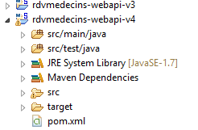
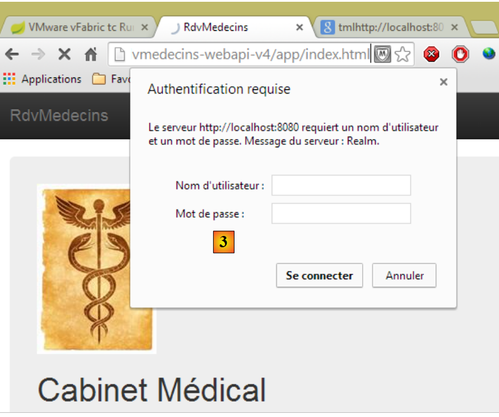
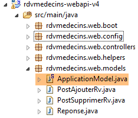
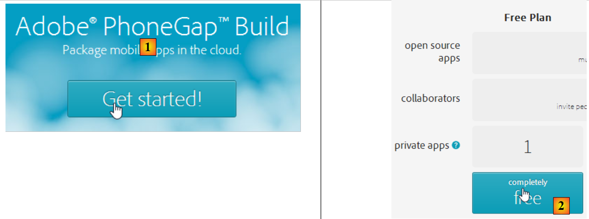
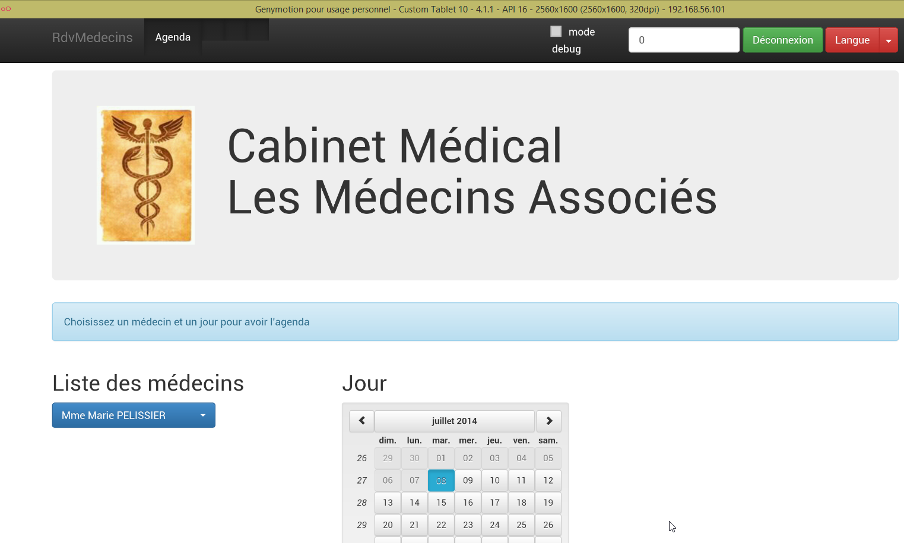
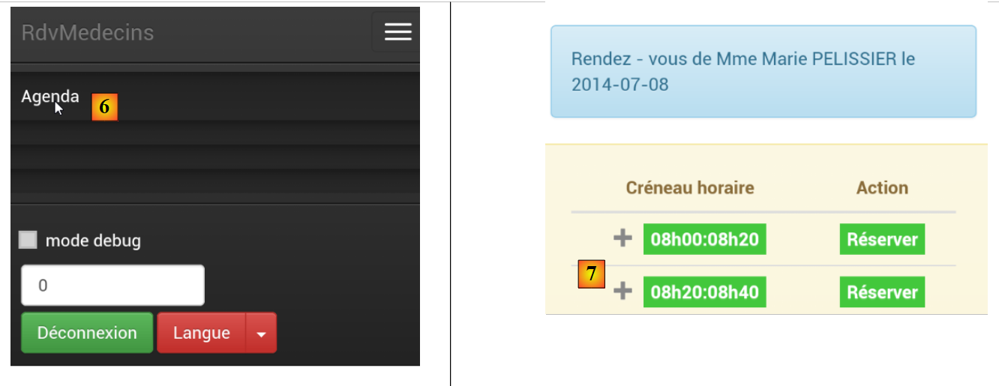

4. تشغيل التطبيق
نرغب الآن في تشغيل التطبيق خارج نطاق IDE وSTS (للخادم) وWebstorm (للعميل).
4.1. نشر خدمة الويب على خادم Tomcat
لقد رأينا في الفقرة 2.11.9 كيفية إنشاء أرشيف war لـ Tomcat. نكرر العملية هنا. أولاً، للحفاظ على ما هو موجود، نقوم بنسخ مشروع Eclipse [rdvmedecins-webapi-v3] إلى [rdvmedecins-webapi-v4].
 |
يتم تعديل الملف [pom.xml] على النحو التالي:
<modelVersion>4.0.0</modelVersion>
<groupId>istia.st.spring4.mvc</groupId>
<artifactId>rdvmedecins-webapi-v4</artifactId>
<version>0.0.1-SNAPSHOT</version>
<packaging>war</packaging>
<name>rdvmedecins-webapi-v3</name>
<description>Gestion de RV Médecins</description>
<parent>
<groupId>org.springframework.boot</groupId>
<artifactId>spring-boot-starter-parent</artifactId>
<version>1.0.0.RELEASE</version>
</parent>
<dependencies>
<dependency>
<groupId>org.springframework.boot</groupId>
<artifactId>spring-boot-starter-web</artifactId>
</dependency>
<dependency>
<groupId>org.springframework.boot</groupId>
<artifactId>spring-boot-starter-security</artifactId>
</dependency>
<dependency>
<groupId>org.springframework.boot</groupId>
<artifactId>spring-boot-starter-tomcat</artifactId>
<scope>provided</scope>
</dependency>
<dependency>
<groupId>istia.st.spring4.rdvmedecins</groupId>
<artifactId>rdvmedecins-metier-dao-v2</artifactId>
<version>0.0.1-SNAPSHOT</version>
</dependency>
</dependencies>
يجب إجراء التعديلات في مكانين:
- السطر 5: يجب الإشارة إلى أنه سيتم إنشاء أرشيف war (Web ARchive)؛
- الأسطر 23-27: يجب إضافة تبعية إلى الأرتيفاكت [spring-boot-starter-tomcat]. يضيف هذا الأرتيفاكت جميع فئات Tomcat إلى تبعيات المشروع؛
- السطر 26: هذه المكونة هي [provided]، أي أن الملفات المضغوطة المقابلة لن يتم وضعها في ملف war الذي سيتم إنشاؤه. في الواقع، سيتم العثور على هذه الملفات المضغوطة على خادم Tomcat الذي سيتم تشغيل التطبيق عليه؛
كما يجب تكوين تطبيق الويب. في حالة عدم وجود ملف [web.xml]، يتم ذلك باستخدام فئة ترث من [SpringBootServletInitializer]:
 |
الفئة [ApplicationInitializer] هي كما يلي:
package rdvmedecins.web.config;
import org.springframework.boot.builder.SpringApplicationBuilder;
import org.springframework.boot.context.web.SpringBootServletInitializer;
public class ApplicationInitializer extends SpringBootServletInitializer {
@Override
protected SpringApplicationBuilder configure(SpringApplicationBuilder application) {
return application.sources(AppConfig.class);
}
}
- السطر 6: الفئة [ApplicationInitializer] تمتد من الفئة [SpringBootServletInitializer]؛
- السطر 8: يتم إعادة تعريف الطريقة [configure] (السطر 7)؛
- السطر 9: يتم توفير الفئة [AppConfig] التي تقوم بتكوين المشروع؛
بعد ذلك، قد يكون من الضروري تحديث مشروع Maven (اضطررت إلى القيام بذلك): [clic droit sur projet / Maven / Update project] أو [Alt-F5].
لتشغيل المشروع، يمكن اتباع الخطوات التالية:
 |
- في [1]، يتم تشغيل المشروع على أحد الخوادم المسجلة في IDE Eclipse؛
- في [2]، يتم اختيار [tc Server Developer] الذي يكون موجودًا بشكل افتراضي. وهو نسخة معدلة من Tomcat؛
ونحصل على النتيجة التالية:
 |
وهذا أمر طبيعي. تجدر الإشارة إلى أن خدمة الويب لا تحتوي على URL و[/] ضمن أساليبها. وعند تجربة URL و[/getAllMedecins]، نحصل على الرد التالي:
 |
هذا أمر طبيعي. الخدمة الويب محمية.
الآن لنقم بتشغيل عميل [rdvmedecins-angular-v2] في Webstorm:
 |
في [1]، نضع URL الخاص بخدمة الويب الجديدة [http://localhost:8080/rdvmedecins-webapi-v4]. ونحصل على النتيجة التالية:

لتشغيل التطبيق خارج نطاق IDE STS، توجد حلول متنوعة. وإليك أحدها.
قم بتنزيل إصدار من Tomcat [http://tomcat.apache.org/download-80.cgi] (يوليو 2014):
 |
نختار في [1] نسخة مضغوطة ونقوم بفك ضغطها في [2]. نعود إلى STS:
 |
- في علامة التبويب [Servers]، نضغط بزر الفأرة الأيمن على التطبيق [rdvmedecins-webapi-v4] ونختار الخيار [Browse Deployment Location]؛
- في [4]: انسخ المجلد [rdvmedecins-webapi-v4]؛
 |
- في [5]، قم بلصق المجلد [rdvmedecins-webapi-v4] في المجلد [webapps] الخاص بـ Tomcat؛
- في [6]، قم بتشغيل ملف الأوامر [startup.bat] (يجب إيقاف تشغيل خادم Tomcat المدمج في STS). تفتح نافذة DOS لعرض سجلات Tomcat. يجب أن تظهر هذه السجلات أن التطبيق [rdvmedecins-webapi-v4] قد تم تشغيله.
للتحقق من ذلك، قم بتشغيل عميل Angular [rdvmedecins-angular-v2] مرة أخرى في Webstorm:
 |
في [1]، نضع URL الخاص بخدمة الويب الجديدة [http://localhost:8080/rdvmedecins-webapi-v4]. ونحصل على النتيجة التالية:
4.2. نشر عميل Angular على خادم Tomcat
الآن بعد أن تم نشر الخدمة الويب على Tomcat، سنقوم بنشر عميل Angular على خادم أيضًا. يمكن أن يكون هذا الخادم هو نفسه الذي يستضيف الخدمة الويب بالفعل. وسنتبع هذا المسار.
أولاً، نقوم بنسخ العميل [rdvmedecins-angular-v2] إلى [rdvmedecins-angular-v3] ونجري التعديلات التالية:
 |
- إلى [1]، وتم نقل كل شيء إلى مجلد [app] ؛
- في [1]، تم حذف المجلد [bower-components] الذي كان يحتوي على المكتبات المختلفة CSS و JS اللازمة للمشروع. تم نسخ جميع هذه العناصر إلى المجلد [lib] [2]؛
- في المجلد [1]، تم تغيير اسم الملف [app.html] إلى [index.html]؛
تم تعديل الملف [index.html] لمراعاة التغييرات في مسارات الموارد المستخدمة:
<!DOCTYPE html>
<html ng-app="rdvmedecins">
<head>
<title>RdvMedecins</title>
...
<!-- CSS -->
...
<link href="lib/bootstrap-theme.min.css" rel="stylesheet"/>
<link href="lib/bootstrap-select.min.css" rel="stylesheet"/>
</head>
<!-- وحدة التحكم [appCtrl]، النموذج [app] -->
<body ng-controller="appCtrl">
<div class="container">
...
</div>
<!-- Bootstrap core JavaScript ================================================== -->
<script type="text/javascript" src="lib/jquery.min.js"></script>
<script type="text/javascript" src="lib/bootstrap.min.js"></script>
<script type="text/javascript" src="lib/bootstrap-select.min.js"></script>
<script type="text/javascript" src="lib/footable.js"></script>
<!-- AngularJS -->
<script type="text/javascript" src="lib/angular.min.js"></script>
<script type="text/javascript" src="lib/ui-bootstrap-tpls.min.js"></script>
<script type="text/javascript" src="lib/angular-route.min.js"></script>
<script type="text/javascript" src="lib/angular-translate.min.js"></script>
<script type="text/javascript" src="lib/angular-base64.min.js"></script>
<!-- الوحدات النمطية -->
...
<!-- الخدمات -->
...
<!-- التوجيهات -->
...
<!-- وحدات التحكم -->
....
</body>
</html>
بالإضافة إلى ذلك، تم تعديل وحدة التحكم [loginCtrl] لتشير إلى الخادم الصحيح لتجنب اضطرار المستخدم إلى كتابة URL:
// بيانات الاعتماد
app.serverUrl = "http://localhost:8080/rdvmedecins-webapi-v4";
app.username = "admin";
app.password = "admin";
وبعد ذلك، نقوم بتشغيل الملف [index.html]:
 |  |
ثم دعونا نقوم بتسجيل الدخول إلى خدمة الويب. من المفترض أن يعمل ذلك. بعد التحقق من ذلك، دعونا نوقف خادم Tomcat. سنقوم بإعادة استخدام الخادم المدمج في STS.
في STS، ننسخ كل محتويات المجلد [rdvmedecins-angular-v3/app] إلى المجلد [webapp] التابع للمشروع [rdvmedecins-webapi-v4] (علامة التبويب Navigator) [1]:
 |
بعد ذلك، نقوم بتشغيل [2]، وخادم VMware التابع لـ STS، ثم نطلب URL و [http://localhost:8080/rdvmedecins-webapi-v4/app/index.html]:
 |
توجد مشكلة في حقوق الوصول في [3]. وهذا ليس مفاجئًا لأننا قمنا بحماية خدمة الويب. يجب أن نحدد أن الوصول إلى الملف [/app/index.html] مفتوح. لنعد إلى Eclipse:
 |
نتذكر أن حقوق الوصول قد تم تحديدها في الفئة [SecurityConfig]. لنقوم بتعديلها على النحو التالي:
@Override
protected void configure(HttpSecurity http) throws Exception {
// CSRF
http.csrf().disable();
// يتم إرسال كلمة المرور عبر رأس الرسالة Authorization: Basic xxxx
http.httpBasic();
// يجب السماح باستخدام الطريقة HTTP OPTIONS للجميع
http.authorizeRequests() //
.antMatchers(HttpMethod.OPTIONS, "/", "/**").permitAll();
// المجلد [app] متاح للجميع
http.authorizeRequests() //
.antMatchers(HttpMethod.GET, "/app", "/app/**").permitAll();
// لا يمكن استخدام التطبيق إلا من قبل الدور ADMIN
http.authorizeRequests() //
.antMatchers("/", "/**") // جميع URL
.hasRole("ADMIN");
}
- السطران 11-12: نسمح للجميع بقراءة المجلد [app] ومحتوياته. ونستلهم في ذلك من الأسطر السابقة.
الآن، لنُعيد تشغيل خادم Tomcat الخاص بـ STS ثم نطلب مرة أخرى URL و [http://localhost:8080/rdvmedecins-webapi-v4/app/index.html]:

هذه المرة، نجح الأمر.
4.3. رؤوس CORS
ربما نتذكر أننا كافحنا بشدة للتعامل مع الرؤوس CORS. في المثال السابق:
- تقع خدمة الويب في URL [http://localhost:8080/rdvmedecins-webapi-v4]؛
- العميل HTML موجود على URL [http://localhost:8080/rdvmedecins-webapi-v4/app]؛
وبالتالي، فإن العميل HTML وخدمة الويب موجودان على نفس الخادم [http://localhost:8080]. ولا توجد أي تعارضات CORS لأن هذه التعارضات لا تحدث إلا عندما لا يكون العميل والخادم في نفس المجال. وينبغي أن نتمكن من التحقق من ذلك. نعود إلى STS:
 |
يتم التحكم في إنشاء رؤوس CORS أو عدم إنشائها بواسطة متغير منطقي محدد في الفئة [ApplicationModel]:
// بيانات التكوين
private boolean CORSneeded = true;
نقوم بتعيين القيمة المنطقية المذكورة أعلاه إلى «false»، ثم نعيد تشغيل خدمة الويب ونطلب مرة أخرى URL [http://localhost:8080/rdvmedecins-webapi-v4/app/index.html]. ونلاحظ أن التطبيق يعمل.
4.4. نشر عميل Angular على جهاز لوحي يعمل بنظام Android
تتيح الأداة [Phonegap] [http://phonegap.com/] إنشاء ملف قابل للتنفيذ للأجهزة المحمولة (Android، IoS، Windows 8، ...) من تطبيق HTML / JS / CSS. هناك طرق مختلفة لتحقيق هذا الهدف. نحن نستخدم أبسطها: أداة متوفرة عبر الإنترنت على موقع Phonegap [http://build.phonegap.com/apps].
 |
- قبل [1]، قد تضطر إلى إنشاء حساب؛
- في [1]، نبدأ؛
- في [2]، نختار خطة مجانية تسمح بتطبيق Phonegap واحد فقط؛
 |
- في [3]، قم بتنزيل التطبيق المضغوط [4] (المجلد [app] الذي تم إنشاؤه في الفقرة 4.2 مضغوط)؛
 |
- في [5]، قم بتسمية التطبيق؛
- في [6]، يتم إنشاء التطبيق. قد تستغرق هذه العملية دقيقة واحدة. يرجى الانتظار حتى تشير أيقونات المنصات المحمولة المختلفة إلى اكتمال عملية الإنشاء؛
 |
- تم إنشاء ملفات Android الثنائية [7] وملفات Windows الثنائية [8] فقط؛
- انقر على [7] لتنزيل الملف الثنائي لنظام Android؛
 |
- في [9]، تم تنزيل الملف الثنائي [apk]؛
قم بتشغيل محاكي [GenyMotion] لجهاز لوحي يعمل بنظام أندرويد (انظر الفقرة 6.4):
 |
في الصورة أعلاه، يتم تشغيل محاكي جهاز لوحي بنظام أندرويد الإصدار 16 (API). بمجرد تشغيل المحاكي،
- قم بإلغاء قفله عن طريق سحب القفل (إن وجد) إلى الجانب ثم تركه؛
- باستخدام الماوس، اسحب الملف [PGBuildApp-debug.apk] الذي قمت بتنزيله وأسقطه على المحاكي. سيتم تثبيته وتشغيله بعد ذلك؛
 |
يجب تغيير URL إلى [1]. للقيام بذلك، في نافذة الأوامر، اكتب الأمر [ipconfig] (السطر 1 أدناه) الذي سيعرض العناوين المختلفة لـ IP على جهازك:
C:\Users\Serge Tahé>ipconfig
Configuration IP de Windows
Carte réseau sans fil Connexion au réseau local* 15 :
Statut du média. . . . . . . . . . . . : Média déconnecté
Suffixe DNS propre à la connexion. . . :
Carte Ethernet Connexion au réseau local :
Suffixe DNS propre à la connexion. . . : ad.univ-angers.fr
Adresse IPv6 de liaison locale. . . . .: fe80::698b:455a:925:6b13%4
Adresse IPv4. . . . . . . . . . . . . .: 172.19.81.34
Masque de sous-réseau. . . . . . . . . : 255.255.0.0
Passerelle par défaut. . . . . . . . . : 172.19.0.254
Carte réseau sans fil Wi-Fi :
Statut du média. . . . . . . . . . . . : Média déconnecté
Suffixe DNS propre à la connexion. . . :
...
قم بتدوين إما عنوان IP الخاص بشبكة الواي فاي (الأسطر 6-9)، أو عنوان IP على الشبكة المحلية (الأسطر 11-17). ثم استخدم هذا العنوان IP في URL لخادم الويب:
 |
بعد ذلك، قم بالاتصال بخدمة الويب:
 |
اختبر التطبيق على المحاكي. يجب أن يعمل. على جانب الخادم، يمكن السماح أو عدم السماح برؤوس CORS في الفئة [ApplicationModel]:
// بيانات التكوين
private boolean CORSneeded = false;
لا يهم ذلك بالنسبة لتطبيق Android. فهذا التطبيق لا يعمل في متصفح. أما متطلبات الرؤوس CORS فتأتي من المتصفح وليس من الخادم.
4.5. نشر عميل Angular على محاكي هاتف ذكي يعمل بنظام أندرويد
نكرر العملية السابقة باستخدام محاكي لهاتف ذكي. نريد التحقق من أداء عميلنا على الشاشات الصغيرة:
 |
- في [1]، نقوم بتشغيل محاكي هاتف ذكي؛
- في [2] و [3]، تم طي شريط التنقل في قائمة؛
 |
- في [4]، يتم تسجيل الدخول؛
- في [5]، تظهر القائمة والتقويم أحدهما أسفل الآخر بدلاً من أن يكونا جنبًا إلى جنب؛
 |
- في [6]، يتم طلب جدول المواعيد؛
- في [7]، نظرًا لصغر حجم الشاشة، فإن جزءًا من الفترات الزمنية مخفي. المكتبة [footable] هي التي قامت بهذه المهمة؛
 |
- في [8]، نفس العرض السابق مع وجود موعد هذه المرة.
في النهاية، يتكيف تطبيقنا بشكل جيد نسبيًا مع الهاتف الذكي. يمكن بالتأكيد تحسينه، لكنه يظل قابلاً للاستخدام.